The Art of Malware
Bringing the Dead back to life
I would like to dedicate this post(or perhaps series of posts) to Mark Ludwig, the author of The Giant Black Book of Computer Viruses, who passed away in 2011. You’ve sparked my initial interest in viruses back in 2013 when I was only 15, and although back then I could barely understand your book I would like to make some closure in modern day era. You saw viruses as art and self-expression, back then that message resonated with me in levels I cannot describe and to this day I am affected by it.
Thank you.
DISCLAIMER:
I do not condone the development of malware for malicious purposes, the information obtained from this post is for educational purposes ONLY. Act with a clear mind, healthy conscious and responsibility please.
Philosophy as a case for developing malware
Malware today is automatically described as a bad thing. Well it is, it’s called malicious software for a reason, but it can be viewed as a form of self-expression or art. One might ask “What the fuck?” but before you get into a rant about that why malware is made, that it’s motivations are to steal and to cause damage and nothing good comes out of it let me set up a different point of view for you. Usually malware requires creativity and to circumvent and bypass layers of defense or to manipulate the system it’s running on. the author of the malware must implement his ideas in a smart and creative way. Yes, it’s true that a lot of times it’s done terribly and sometimes the author either blindly copy pastes code of other malware authors or researchers but usually when its done with some innovation in mind the result is usually interesting. Perhaps not for the organization being attacked, perhaps not for the end user who gets his data stolen but FOR me, the analyst who ends up analyzing the product of the author, is very interesting.
Let’s take TDL3/4, A rootkit that caused significant amount of damage back in 2010-2013. Implementing hooks in the lowest levels of the kernel to avoid detection, creating its own virtual file system and building an actual virus as the first stage of attack. It infected computers in such a large scale that Microsoft literally pushed out specific mitigations against it, tools were developed to specially target it as it was not easily recognized by most anti viruses until late stages of its development and it even caused a large number of computers to crash when Windows updates were issued because it modified the system. Microsoft, as a mitigation attempt, simply didn’t install the update on the infected system. That’s just insane!
Sure, the main goal of the authors was to gain money, but they also proved to be creative and to have a deep understanding of Windows Internals in such depth that they were able to use the system against itself in ways that were not seen before. Even after Microsoft issued the new policy that all windows drivers must be digital signed by Microsoft to execute in the kernel, the authors pushed out TDL4 for 64-bit systems which started utilizing bootkit tactics to infect computers. The press called it “Indestructible”. Malware wanted to be packed with TDL and Rootkit authors wanted to be TDL. The fun ended mostly when the authors were arrested.
If you read analysis repots of TDL you can’t stop gasping, why? Because it’s simply designed in with such creativity in mind that you can’t help but appreciate it.
Let’s take CIH as another case, A virus that was unleashed back in 1998 with reported costs of 1 billion dollars of damage and infecting ~60 million machines. Was developed to prove that AV companies are not worth their slack. But the unique way that CIH infects a computer is just mesmerizing. It scans the files for empty gaps, and then splits itself into chucks and injects itself into them. On its payload 26th of April triggers a MBR overwrite which renders the computer unbootable. Destructive? Yes. Amazing? Also, yes.
Malware in my point of view is as bad as bacteria, yes in our eyes it causes damage and might kill people but also, it’s a living organism acting on its nature. Our perception of that nature is bad because we attribute motivations to it, but without the authors motivation it’s simply just is and sometimes its incredible.
Yes, sometimes malware is just there to steal data and encrypt your files which in all honesty is kind of boring and annoying like mosquitoes and bad art, but sometimes it’s interesting and amazing like watching a parasitic worm turn snails into disco zombies.
Entering the morgue
“Alright Danus, enough with the philosophy, let’s get into it!” Yeah yeah… alright let’s get into it. First, we must choose what exactly we are going to be developing, and who is a better candidate than viruses. What is a virus? Isn’t all malware a virus? No.
Viruses is by defined by Wikipedia as “A computer virus is a type of computer program that, when executed, replicates itself by modifying other computer programs and inserting its own code.[1] When this replication succeeds, the affected areas are then said to be “infected” with a computer virus.”
And yes, it is malware but its not a Trojan or a Worm. A trojan doesn’t self-replicate and is sometimes referred to as bacteria and a worm unlike a virus or a trojan doesn’t need user interaction to spread itself as it does so independently using the network.
But why a virus? Well, they are old and not much made anymore(VIRUT infecting malware developers ahem). Most of them were not made to steal data and mostly were used as internet graffiti. Developing viruses proved skills, creativity and innovation back in the glory days of viruses but they are hardly utilized today because its hard to generate profit out of them. As far As I see it, that’s where it all started from and Intended to start from the beginning.
Now we need to choose a system to which to run these viruses on. I think a good candidate is Windows 7 x32 because its modern enough but limited in its defenses so it’s a perfect candidate.
Now we need to choose a virus, and what better place to find them than https://malware.wikia.org/wiki, http://virus.wikidot.com/ or https://vxug.fakedoma.in/. But before we actually develop a real virus we must learn the basics of virus development using The Giant Black Book of Computer Viruses 2nd edition which can be found online in the internet archive.
First we’ll emulate the viruses on FreeDOS(get your copy here) or on old versions of Windows(95/98) to view how they actually executed(because learning how different legacy operating systems work is fun) and then based on how they executed back then we’ll attempt to some how recreate them in Windows 7. Why DOS though? Can’t we just start with Windows? Well, yes, we can but I think one should understand why things today are as they are. What is protected mode and real mode? how virtual memory works? what defenses OS’s and hardware incorporate today that didn’t exist before? It is fundamental knowledge to understand why things are they way they are.
Why FreeDOS and not MS-DOS? I’m not that old school – FreeDOS provides us a platform to emulate our DOS viruses but has many modern useful built-in tools integrated into it plus VMware communicates perfectly with it. Here’s a copy of the user guide to FreeDOS.
Additionally, we’ll be coding in pure assembly and I’ll be using NASM for FreeDOS and Visual MASM which as a very cool IDE that will allow us to code Windows assembly. but you can use any assembler you’d like. Why assembler though? Can’t we make viruses in C? or C#? or Java? No, because one; it would be defying the great tradition of making them in assembly and two; high level languages will not allow us to get creative as much as we’d like.
Alright what else, please download:
Background knowledge REQUIRED:
- Experience Intel x86 assembly
- Experience in C development
- Basic with windows Internals
- Basic in x64dbg
- Basic experience with UNIX or DOS shell
What I’ll be teaching you:
-
Technical Knowledge
- Teach the reader how to program in DOS and Win32 assembly
- Teach the reader the basics of old school virus architecture
- Teach the reader about computer architecture history and Windows Internals
-
Researcher Skills that you will have to acquire
-
Data collection:
-
Learn how to google, all your answers are found within the internet.
-
Look for only what you need to know. For example, if you are reading about Virtual Memory – don’t start digging into the how the electricity circuits in the MMU operate. It is a waste of time in the context of this article.
-
Learn to use CTRL + F, it will save you a lot of time.
-
MSDN is the bible of Windows API and it usually has all the information you need about specific function.
-
-
Structure:
-
Make a list of all the things you don’t know or don’t understand, break them into subcategories and make an effort to understand them.
-
I list a lot of resources, save time by reading only what you need to know.
-
Don’t get lost in the massive amount of information, breath… and orient yourself to reading only what is necessary.
-
-
Seeing the bigger picture:
- If you see something you don’t understand in my code, don’t drown in the specifics. If it’s necessary to get into it I will get into it.
-
Note
This is not an assembly tutorial, nor is it a Windows programming tutorial. It is assumed the reader can read and write basic Assembly, and has some experience with the Windows API. If the reader does not posses this knowledge, the information below might be a difficult read.
Alright, let’s put our surgeon coats on and don’t forget the gloves cause we’re entering the morgue!

Setting up FreeDOS using VMWare
Run the FreeDOS image in VMware and it should install itself with relative ease.
Welcome to 16-bit real mode heaven. No memory protection, no protected mode, no multithreading no nothing. Just pureness. It’s my first time here too, I’ll be honest.
Let’s start by installing NASM so we can write assembly here so type down FDIMPLES and you should get this window:

Use the arrow keys to scroll to “Development” and then scroll to “FASM” or “NASM”. Now you can use the arrow keys again to quit.
Intel x86 Real Mode Basics
So before I start explaining here is the Intel Assembly Manual by Michael Chourdakis if you get confused or stuck in my explanations you can always go back there, he explains it perfectly and also more in depth than I’ll explain here in my article. If I make a mistake, feel free to correct me privately 
So Real Mode is the bare basics state of the CPU, the BIOS runs on it. There is no memory protection, no virtual memory. Basically, it’s free for all.
What matters to us in the scope of this article that DOS executes in real mode, this means only one program can run at a time there is no multi-threading.
Memory access is limited to one megabyte and unlike in a normal windows environment there is no separation between the kernel and user applications, everything can access everything. So, applications can run anywhere in memory and have access for all memory, basically anyone can do anything. This what makes DOS such a fertile ground for viruses.
Register State in Real mode
General Purpose registers 16-bit registers
AX, BX, CX, DX that you can split to their low or high counter parts
Special Pointer Registers 16-bit registers
BP(Base Frame pointer), SP(Stack Pointer), IP(Instruction Pointer
Segment Registers 16-bit registers
ES (Extra Segment), DS (Data Segment), SS(Stack Segment), CS(Code Segment)
Indexing Registers 16-bit registers
DI (Destination Index), SI (Source Index), BP, SP – These are the only registers that a programmer can use to indirectly access memory so executing mov ax, [cx] will not work.
Memory Segmentation
In Real mode programs access physical memory directly, there is no virtual memory abstractions. Memory was one megabyte long, but it was accessed through a 16 bit register base address and a 16-bit offset, This allowed to keep the registers 16 bit aligned but to extended memory to one megabyte. So, Segment: Pointer. One segment can reach 64 kilobytes. Why is this needed you might ask? Well it’s a logical memory abstraction, it helps to keep the memory access organized in the sense that each segment represents its function; Data is stored in the data segment, code is stored in the code segment and the stack is stored in the stack segment.
So basically, say our program has a Data segment that starts at 0x2000 and we want to access the 10th byte offset of that segment we’ll do that by referencing the memory DS:[10h]. but how is that calculated you might ask? Well we take the segment register value and multiply it by 0x10, so we append another zero to it and then add the offset.
0x2000 * 0x10 + 0x10 = 0x20010. This technique allowed programs to access up to 1 MEGABYTE OF RAM! Because the final value calculated is 20 bits long.
Disk Operating System (DOS) Architecture
Even though DOS can access up to 1 Megabytes of memory, the memory above 0xA000 is reserved for the system so DOS user applications could only access the lower 640 kilobyte boundary.

credit
The first 1024 bytes (or first kilobyte) of the memory contains BIOS and DOS Interrupts. this memory area is also called the Interrupt Vector Table (IVT). There are three types of interrupts – software interrupts which are triggered by the software (e.g. throw keyword in python) or in our case, DOS. Hardware interrupts which are triggered by external devices. Additionally, there are exceptions which are triggered by the CPU itself, there are three types of exceptions (faults, traps and aborts).
Hardware interrupts are not always expected, and the CPU can set them to be maskable(ignored) or non-maskable (cannot be ignored).
An example for a hardware interrupt would be interrupt number 9 which is issued when a key on a keyboard has been pressed. A good example for an exception would be interrupt number 0 which is triggered when the CPU is attempting to divide a number by zero. An example of a software interrupt which is handled by DOS itself would be interrupt number 21h, which is the DOS API service.
Under MS-DOS, the BIOS handles interrupts 0-31 and DOS handles interrupts 32-63, the rest 64-255 can be user defined. There are many types of DOS and BIOS interrupts and they all can be viewed in here.
The IVT can be treated as an array, each cell in this array contains the address of each interrupt in memory. The lower two bytes are the location of the offset where the interrupt code is stored, and the upper two bytes is location of the segment where the interrupt is stored.
So, say we have linear address line at 0000:0000 which contains [10,20,30,40] the offset of the first interrupt would be 0x2010 and the segment of the first interrupt would be 0x4030. Wait Danus, you got it reversed! not I did not, don’t forget the intel CPU is built with little endian architecture which means the least significant byte is stored first. So, the address of INT 0 mis 4030:2010(or to get the physical memory address 4030h*10h+2010h = 42310h)
To execute an interrupt from the IVT, we use INT <index in hex>.
Can we view the IVT somehow? Yes! We can use the DEBUG utility which can be used as system debugger utility. It allows us to dump and view memory, assemble instructions directly into memory and execute them. Since there is only one core and only one program running all the time, we can play around with DEBUG to debug the entire system much like a kernel debugger. But be careful, because as you remember we have access to entire memory of the system, and we have no limitations.
Let’s view the IVT. Let’s execute the DOS “DEBUG” command and then use D for dump and view the contents of area 0000:0000 which contains the IVT.

So, 0364:1DB6 is the address of INT 0 and 0364:1DBF is the address of INT 1, etc…
Writing a basic COM overwriting Virus in DOS
Let’s examine the mini-44 which is called like that since it’s only 44 bytes long virus from The Giant Black Book of Computer viruses at page 29. I’ve modified it to a MINI-51 for the sake of this post and Its modified source that I’ll be using can be found here on my GitHub:
https://github.com/DanusMinimus/MalwareArt
The original file was found at @TMZ github(Your’e awesome TMZ!)
I’ve edited the virus a bit to make it work on FreeDOS and NASM. I didn’t change it all too much, but I advise you to apply the changes I’ve added to the file yourself. (Because of my edits the mini 44 turned in to a mini 51.)
Before we begin analyzing this piece of code, we must understand something about COM files. They are built around the tiny model which is defined as:
“The tiny model. Everything must be included in a single segment (COM file). Pointers are near.”
The maximum size of a COM file can only be 64 kilobytes, and everything must be contained in one segment, meaning all jumps are relative to one segment and cannot jump beyond the 64-kilobyte boundary. The Stack, data, and code all must reside in this one segment. Additionally, a COM file begins its execution at 100h(h stands for hex). The first 256 bytes of memory are reserved for the Program Segment Prefix (PSP) which contains various information and function calls that the COM file can use. The PSP is relic of the past days and was created in DOS to maintain compatibility with old COM files. The following data can be found within the PSP:

The only field that will come into play for our virus is the DTA, which we’ll talk about soon. Further information about this can be read in pages 25-26 in the Giant black book.
So, let’s get back to our code.
Its well documented but to ease your understanding I will go line by line with you.
First at line 6 the address of the file name to search is passed into EDX. Then AH with E4h is setup to call DOS API service INT 21h.

So, what does this execute? If a file is found, the AX register returns 0 and 43 bytes of the DTA field in the PSP are filled with data regarding the first file that was found (Its attributes, its size, its time of creation and Its name). If the service routine failed, the CF flag would be set and a JC is performed to line 47, which terminates the program.
Then on line 15 DX is filled with the address of the file name string returned in the DTA. AH is filled with 3Dh which will instruct INT 21h service routine to open a file handle( A file handle can be seen as an abstract pointer to a resource, it used by the OS to access system resources) and AL will be filled with 02h which will open the file for READ/WRITE operations. INT 21h is invoked again.
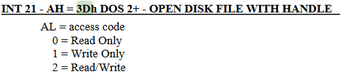
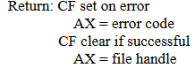
If the call fails, the program jumps to NEXT_MATCH which will be discussed shortly.
If the call executed correctly, the file handle returned will be passed into BX. DX will be filled with the offset of the writing position, It points to 100h which is the start of our own code.(Remember that COM files start execution at 100h), CX is filled with the size of our code(51 bytes or 33h). AH is filled with 40h which sets up INT 21h to execute a write file service.
If this instruction returns successfully, the found COM file will be infected. At line 37, the file handle is closed. At line 42, the virus will execute service 4Fh which will look for another file, if this check fails the virus will terminate, if it succeeds the program will infect another file.

To create our virus let’s first make a new directory using “mkdir” and call it COMDIR, then use cd COMDIR to enter it.
Now execute “edit” and write down the virus inside manually, use the mouse the navigate to the file tab and click new. I still can’t understand how to copy from host machine and paste into FreeDOS yet so if anyone knows feel free to update me on that.
When you are done writing down the virus navigate to the file tab and save the assembly file as virus.asm.

To assemble this file using NASM write down “nasm virus.asm -fbin -o virus.com” and this will create the virus com file for us.
Writing a Host COM application
We need a host for our virus, I think a great candidate would be the code snippet in page 23 in our book.
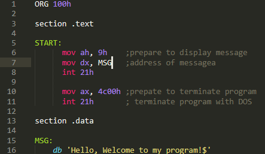
The program is very simple, first it prepares the message display routine by loading AH with 9. Then it passes the start address of the message we want to display into DX (Messages that are displayed into terminal must be terminated with ‘$’), finally the program terminates by passing 4c00h into AX and then calling INT 21h.
I execute the “DIR” command to display what is in my current directory, assemble our host program and check out of its working:

Cool, lets make a few copies of it by using “COPY”:

So now we’ll have:

Now let’s execute our virus with the debug utility and see what happens (You can use ‘?’ any time to see the help menu of debug):

Enter ‘p <number of lines>’ to execute lines of code

First we execute lines 11-15 to execute the dos “Search First” function to find the first com file, as we recall it should load the file attributes into the PSP which can be found at offset 80h. After the call to INT 21h service routine we should see the DTA inside offset 80h from the start of the code segment in memory. Let’s dump the code segment at offset 80h “d(ump) cs:80”

The virus found itself! That’s alright though because we are just going to overwrite the virus with the virus!
Next we execute line 19 – 26 to open the file handle to the found file, the file handle is passed to AX if the call to INT 21h service routine will return successful.

AX holds the file handle, lets execute line 30-37:

AX returned 33h, which is the number of bytes (in hex) written to the file. Basically, at this point we have overwritten the original file or the virus with the virus itself.
Now let’s close the handle, execute the “Search Next” service routine and view the DTA field in the PSP again to see if it will find the next file:
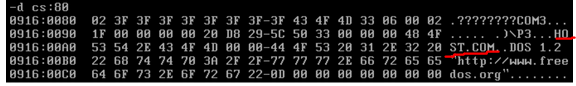
We can see that it found HOST.COM, this exact operation will run until all files in the directory are overwritten. Let’s enter the “q(uit)” command and run the virus simply by typing its name in the command prompt.

Our host files have all been infected by the virus, how do we know? They all match its size and if we’ll execute them nothing will happen. Pretty cool huh!

Now that we understood how basic COM infectors were made back in DOS, we can attempt to make our own infector in Windows!
Windows Internals
To cope with the massive security problems that real mode introduced most operating systems today are executing in Protected Mode.
Windows Internals Basics
Here I will be explaining the BARE basics of Windows running in protected mode, some of the explanation has been simplified for the readers understanding. If one wants to expand on the information written here, please visit the article listed above.
Protected mode is a whole new architecture and is beyond the scope of this post. I will cover only what is relevant to us under Windows. If the reader is interested to learn more, please reference the article listed above.
The executing environment for applications is separated from the operating system, applications are separated in what is called user space and the Windows kernel is executing in kernel space. Only the kernel has access to physical memory and system resource.
How does Windows manage to perform this separation? It uses what is called Virtual Memory which is provided by the Memory Management Unit(MMU) chip in the CPU. The MMU separates the entire physical memory to Pages, these pages are handled by a special table, each page usually references 4 kilobytes of physical memory.
When a process executes in a 32-bit Windows environment it has pages reserved to it in the Page Table. The process has no idea it’s executing itself with in the context of these pages, in fact the process has access to all 4 gigabytes of RAM in a linear address as far as its concerned. It assumes it’s the only process running within Windows and it also assumes it has access to the entire memory within the system.
This happens to each process executing in Windows, so say we have 2 instances of notepad.exe running at the same time: notepad_proc_1 and notepad_proc_2. If notepad_proc_1 is attempting to access the value in address 0x1234 of itself and notepad_proc_2 is attempting to access the value in address 0x1234 of itself, they would probably both accesses completely two different values. But how could this be? Well, it’s because they are executing in different pages in the page table.
As can be seen in the graph above, both values are mapped to two different pages and these pages are pointing to different areas in physical memory. So, process executing in Windows running in Protected mode cannot touch or overwrite each other in memory so they can both execute gracefully within the same environment.
But how do they have access to system resources if they are separated from the system itself? If these two notepad process are separated entirely from the system how can they open files? Ah good question! They are managed by the Windows Kernel. The windows kernel is a separate process running on windows it’s mapped into each process running on the system, the kernel is the operating system manager. As I mentioned before only the kernel has access to system resources and the system physical memory so if the process wants to access system resources it must perform a request to the kernel. This is done through API calls, much like the INT 21h interrupt service routine. How ever in DOS a program could use the DOS interrupt services if it wanted to access system resources in memory, but it was optional, nothing stopped from a DOS application from performing manipulations on system resources, it just was very uncomfortable. In Windows, a running application MUST call Windows API to gain access or to modify system resources.
So, our graph looks like this:

If the kernel doesn’t see these request fit, it will deny the process access to the system resource. For example, say notepad_proc_2 is currently reading README.TXT but another application wishes to delete it. The application will invoke DeleteFile API, this API will pass into the kernel, the kernel will see that the file is currently being read and will deny the application from deleting it.
This mechanism replaces the IVT and creates a separation between applications and the system. The applications cannot do anything they want, they are separated from the system and each other and basically can co-exist with no problem.
Alright, now another question arises. I’ve claimed that each process has access to 4 gigabytes of memory, but in a 32-bit system there are only 4 gigabytes of RAM, how is this possible? Wont the system fault and crash as soon as an application overruns the entire RAM?
The answer to that is simple, first yes it might happen that a program (say a virus) will request so much memory that other applications simply couldn’t run. To solve this problem Windows performs something called “Paging”, Paging is an act of taking a page and mapping it on disk. Instead of managing all the pages in RAM, some pages are put on disk and managed through there. Access to these pages on disk is much slower and can cause some applications or the system to start slugging. Paging is also used to free some memory from the ram. Say an application would go idle and would stop using the RAM. Windows would detect this and to free temporary memory it would save the applications pages and map them to disk, when the application would run again – Windows would map the page back into RAM.
Alright bear with me guys, just a little more theory and we start developing again.
Where is user space in the process and is the kernel space mapped into the process?
The kernel space is mapped into each process and the user space is where code, data and the resource of the application are located. It makes sense to map the kernel into each process so it would be easier to perform requests to it.
The user space is located at address 0x00000000-0x7FFFFFFF and the kernel space is mapped from 0x80000000-0xFFFFFFFF. The kernel gets 2gb and the user gets 2gb of RAM. So, its fair game.
Portable Executable (PE) File Format
It’s time to code our virus, it would be a simple virus much like the COM infector. Infecting only the files in the current directory, not employing stealth or direct system calls. But what kind of files are executable within the Windows operating system? These are the Portable Executable files and they have a much more complex file format than the COM file.
Since it’s going to be a basic overwriting virus affecting only PE files, all we need to do is overwrite the code located within the PE. But the PE file format is nothing like the COM file format. It has been discussed a million times on the internet, but I truly believe that one who knows the PE file format by hand can only leverage from, especially when it comes to malware analysis.
As far as the basics concerned the PE File contains:
-
the PE Headers which contain various information about the file
-
4 additional sections (sometimes more)
The .text section – The user code executes in this section
The .data section – Initialized global variables and data for the user code is stored here
The .bss section – Uninitialized global variables are stored here
The .reloc section – The relocation table is stored here, it is a mechanism that allows the Windows PE loader to load the executing PE in different areas in memory
Before we start destroying PE files let’s see how they work under the hood. Let’s start by trying to find the location of the user defined code stored within the PE. But finding it is not as easy as one might think – thankfully the PE header is constructed in such a way that is relatively easy to find all the fields we are looking for and we are looking for a very special field located inside the PE header called “Address of Entry Point” which is the offset of the location of the user code in relation to the base of the file.
To experiment with this, lets code a host file in assembly in MASM that would display a message when run, Open Visual MASM -> Click File -> New Project -> Windows 32 MessageBox application -> Save Project As in your specified folder. Now let’s examine the code:

In lines 7-9 we define the model of the assembly binary (We’ll touch this on later chapters). Then on line 4-6 we use the “Include” directive to instruct MASM to import all the constant types from windows.inc, user32.inc and kernel32.inc. These constants stored in these files define various constant parameters for functions (e.g. MB_OK constant for MessageBox API which will spawn a message box dialog type of “OK”)
Then in lines 21-22 we include all the assembly functions definitions for user32.lib and kernel32.lib which define various Windows API calls. Then on line 27-29 we define the PEs .data section and as you recall it should contain initialized global data.
Then on line 34-41 we define the programs .code section which is the section that contains the code of the program. But wait Danus! Shouldn’t the .text section contain the code of the program in the PE? Well yes but in MASM due to compatibility reasons I guess(?) They kept the name .code instead of .text.
We then define a new “Start” label and call MessageBox which is defined by the Windows API as:
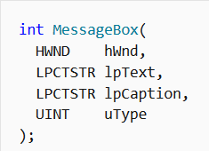
In our code we can see that the parameters are passed as following:
- 0 – handle to owner of the window of the message box created. NULL(0) parameter indicates that there is no owner meaning the message box will simply display independently
- ADDR strMessage – The address of the string which will be display inside the message box
- ADDR strTitle – The address of the string which will display the title of the message box
- MB_OK – A constant included in user32.inc which indicates the type of the message box
ExitProcess is then called which is a Windows API that will terminate the process. It only has one parameter passed to it, in this case 0 which will the process was terminated with no errors.
You can notice that instead of using “Call”, MASM uses “Invoke”. You can still use call but Invoke is a MASM assembly macro that makes it a bit more comfortable for the user to call a Windows API function.
Let’s change it the Invoke to a call because assembly pros like us only use native assembly. I assume the reader knows assembly but just in case you don’t – remember that function parameters when passed in assembly are passed into the stack which is a First in Last Out data structure. so, the last parameter is pushed first, and the first parameter is pushed last. If you want to expand on this information please read this. As an exercise, try to do this yourself before you read the solution.
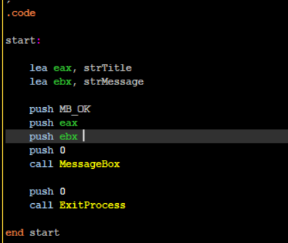
So, if you did try to do it yourself and failed - you cannot use the ADDR keyword in push instructions. You must load the address of the strings manually into registers and push them into the stack.

It works! But the final binary is big as compared to the COM file we produced for DOS(3584 bytes vs 51 bytes.
It does make sense though as when we are using the “Include” Directive we are including all the code that is included inside the libraries we are importing. This can be fixed using DLLs which are loaded dynamically into the PE, but we’ll touch that subject on a later post.
Now let’s examine the PE File format with PEBear! PEBear Allows us to traverse around the PE file and view its entire structure so open PEBear and load our program into it.

I’m going to use this PE File Format poster by OpenRCE. It’s going to help us follow the PE structure, so I highly encourage you to use it with me. The PE File format can be viewed as a large linear structure which contains a lot of sub structures, this helped me a lot when I was first learning to traverse around it. Almost all values in each structure are simply a Relative Virtual Address (RVA) offset from the begging of the file to another location within the structure. What is RVA? Soon I’ll explain.
You can view fields and structures inside PEBear using the left menu list which will redirect you to the location of the fields inside the blue hex dump

and you can use the middle tabs that can simply list the PE values in a more comfortable fashion.
Let’s examine the first structure of the PE File header the DOS HEADER:

And the OpenRCE poster:
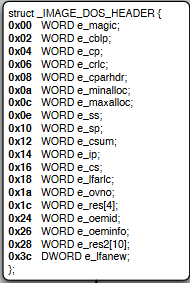
There are a lot of values here, but we only care about two:
- e_magic - which is a two byte(word) value which contains the letters “MZ”, it’s the PE file signature and you can find it in all PE files. If you’ll look at PEBear you can view it in the hex dump as well: \

-
e_lfanew – contains an RVA offset value to the location NT_HEADERS structure.
So what is RVA?
Well, when we are viewing the file on disk much like right now, when it’s not loaded in memory all offsets are relative to the start address of the file – when it’s viewed on disk the files base address is zero. When the file is loaded into memory its going to be loaded at a specific address which is not known until the file is loaded into memory. To access specific fields within the PE values, we use the RVA to calculate the actual location of those fields or the Virtual Address (VA) of the fields. The formula to calculate the actual location of these fields goes as follows:
Virtual Address (VA) = RVA + Base Of ImageBase Of Image can be any address, it doesn’t matter. When are traversing the file when its not loaded into memory and its on disk the base address is zero.
-
DOS Stub, which contains a small program that will execute on DOS if we attempt to run this PE inside of it. It would simply output “This program cannot be run on DOS mode”. We can copy the hex dump marked in blue from offset 0x40 – 0x70 and disassemble the code(You can actually run it inside DOS
)

Armed with this information lets try to find the starting location of NT_HEADERS structure which is found inside e_lfanew field within the DOS HEADER.
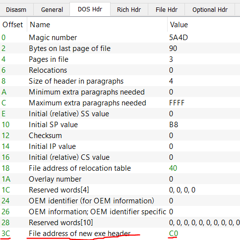
So the location of the NT_HEADERS(also the new header) can be found at RVA 0xC0. Easy enough right? 0 + 0xC0 = 0xC0.
What if the computer loaded our file at address 0x412000?
Simple! To find the NT_HEADERS first we must find e_lfanew value. We know its located at RVA 0x3C to the start address of the file. Let’s calculate the Virtual Address of that:
0x412000 + 0x3C = 0x41203C. Now at this location we find the value 0xC0 which is the start address of NT_HEADERS. Let’s fine this header start address:
0x412000 + 0xC0 = 0x4120C0.
Next, click on “Go to RVA”

Enter 0xC0 and click OK.
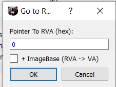
We land at location 0xC0:

Now to confirm we actually landed at **NT_Headers **click on NT_HEADERS on the left list. By click it – it should take us to the starting location of NT_HEADERS and it takes us to the same place, as the Hex dump didn’t change.
The NT_HEADERS contains 3 important values:
- Signature – Will always contain 0x5045 which in ASCII translates to “PE”
- FileHeader – A linear address containing FILE_HEADER structure
- OptionalHeader – A linear address containing of OPTIONAL_HEADER structure

The File Header is an interseting structure which contains very important information about the file itself such as it’s CPU architecture(Machine field) or an indication if the file executing is a 64 bit file or a 32 bit file (Characteristics field). But we seek two values located inside the OPTIONAL_HEADER.

We seek the field called ImageBase and AddressOfEntryPoint!
Alright so let’s find the Optional_Header. We know it starts at 0x18 according to the NT_HEADERS specification(refer to above image) and its location is relative to NT_HEADERS. NT_HEADERS starts at RVA 0xC0. So, to find Optional_Header we simply need to add 0x18 to 0xC0:
VA of Optional Header = ImageBase + Offset of NT_HEADERS(0xC0) + Offset of OPTIONAL_HEADER = 0 + 0xC0 + 0x18 = 0xD8.

We are correct! Now let’s look at the values inside the header using “Optional hdr” tab:
The Entry Point field value contains the RVA of where the code starts to execute with in the file.
The Image Base value contains the location in which the file will be loaded in Virtual Memory. The default value is always 0x400000 but it due to a mechanism in Windows called Address Space Layout Randomization(ASLR) this value always changes on run time. So, the start address of the PE is almost never known unless ASLR is disabled for the file.
Armed with this knowledge, we can open our file at any disassembler. I’ll be using Cutter( shout out to @megabeets_). Cutter is a free disassembler and debugger based on radare2 so everyone can use it

I will be loading the file with “Virtual Addressing” which will load the file with the default Image Base.
As it can be seen:
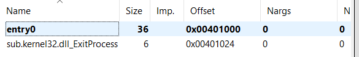
Entry0 is located at offset 0x401000. As we recall the RVA of the entry point is 0x1000. The Image base when loaded into memory is 0x400000.
VA of entry point = Image Base(0x400000) + Entry Point(0x1000) = 0x401000
If we double click entry0, we’ll land right at the entry point and we can see our code even labled as .section text!

A funny thing I noticed – we can see how MASM assembled our code. It seems that instead of calling MessageBox directly, MASM chose to execute a call at 0x401012 to jump to 0x40101e and from there jump to MessageBox!
Alright, lets summarize what we know:
- We know the basics of how Windows handles memory and the kernel
- We understand that PE files are more complicated than a simple COM file
- We know how to traverse around the PE file header using PEBear
- We know how to find the Optional Header, and how to use it to find the default virtual address of the file in memory and use it to find the start of the code of our file which is located inside address of entry point
Building a PE File Infector
To practice our new found knowledge, Lets create a simple overwriting virus, it would work much like the COM file infector:
-
Find a file in the current directory which contains “HOST" in its file name
-
If file was found
a. Overwrite the found file found file with the infector as it is on disk
a. Find next file
i. If file was found, execute 2 again
c. If file was not found, end the program -
Find the following of PE fields in the virus and print them:
a. e_magic - DOS HEADER
b. e_flanew - DOS HEADER
c. Signature - NT HEADERS
d. Machine - FILE HEADER
e. Magic - OPTIONAL HEADER
f. Size Of Image - OPTIONAL HEADER -
End the program
Although our new found PE format knowledge wont be used directly for infection in this case, it would be used in the next chapter. This virus is not an advanced virus nor is it very stealthy, nor is it concerned with saving space or using local variables. It just destroys everything that comes in its path.
Lets assume that all the host files to infect are located within the same directory including the virus.

Now we have to discuss 2.a, how will we overwrite the host file? We can read the virus file when its loaded in memory from its ImageBase and dump the virtual memory to overwrite found host files. Alright this might work but the problem is that the way a PE file is mapped in memory is very much different than how it is mapped to disk, so if we overwrite the host files on disk with the virus in memory the infected host files will not execute. What else? Well we can open a handle to our virus – read its code and then overwrite it the host file. Alright… but one problem, if we execute CreateFile API from the virus process which will open a handle to the virus file on disk the kernel well deny that request. The reason for that would be that is that the virus process is currently opened from the virus file on disk and that is enough reason for the kernel to deny any process access to the virus file on disk, even for itself.
Even though the kernel wouldn’t like the usage of CreateFile we can copy the virus file to the host locations. The copied file is the same virus file but it’s a new file with a different name and its unused so nothing is stopping us from opening a handle to it. Then we’ll read the virus contents into a buffer, delete the copied virus and for each found file in the directory we’ll simply overwrite it.
There are different ways in which we can read the contents of the copied virus file, but for simpliciteis sake lets simply use GetFileSize to get the size of the virus and ReadFile to read the files contents.
The next problem is that the virus cant infect itself because unlike DOS, Windows will not allow us to open a handle to the virus itself, nor create another file with the same name as itself. To solve this we’ll use GetTickCount which returns:
“retrieves the number of milliseconds that have elapsed since the system was started, up to 49.7 days.”
The value is returned to EAX. Well use this value as a name for our new copied virus file. Then to avoid opening a file handle to the virus itself we’ll check if the found file name in the directory matches our virus name. To traverse all the files inside the directory we’ll use FindFirstFileA and FindNextFileA. So, our result should be similar to the com file infector.
Source code can be found in https://github.com/DanusMinimus/MalwareArt/tree/master I would not list it here as it is to long. I encourage the reader to read up on the API calls and the PE Header values that I would list in my source, learning to google and to read up specific information is a very useful skill to have in reverse engineering and malware development
Please load the virus in its assembled form into x64dbg and lets start executing. First we execute lines 63-89

I invoke GetModuleHandleA with the NULL parameter, which returns the base address of the virus as it is loaded in memory. The value is saved inside the global variable dwImageBase.
Then I invoke GetModuleFileNameA, with a NULL parameter which would return the full path to the current executing process which is our virus. The path is saved inside lpcstrFileFullPathBuffer global variable.
I invoke GetTickCount and use sprintf to generate a new file name and save it inside lpcstrFilePathBufferVirus. Then I use CopyFileA to copy the virus’s main binary to the hosts location with the new name. I then use CreateFileA to open a handle to the new copied virus with GENERIC_READ permissions. One might notice that I’m using CreateFileA instead of CreateFileW, the difference between the A postfix and the W postfix is that the first expects a c string and the latter a wide character string. In a C string each character is one byte long and in a wide string each character is two bytes long.
Then I execute lines 90-112

First I save the copied virus file handle to a global variable called hSelfFileHandle. I then invoke GetFileSize to get the file size of the virus on disk and save it inside dwImageSize. I use VirtualAlloc to allocate virtual memory inside the virus process which will hold the virus contents as they are on disk. I invoke ReadFile and read it entirely into the memory returned by VirtualAlloc. I then close the handle to the copied virus and delete it using DeleteFileA.
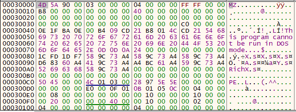
The virus was loaded into memory! we recognize the “MZ” signature value and the DOS STUB string!
Next I execute lines 115-143

I load the saved ImageBase address into EAX and print its contents which should print “MZ”

Then at line 120-125 I save the ImageBase inside EAX and EBX. I add 0x3c to EBX which as we recall is the RVA to** e_flanew** field inside the DOS HEADER. This value contains the RVA of NT HEADERS

I extract the value and add it to EAX which should move EAX to point to the start address of the NT HEADERS. I then exchange the values of EAX and EBX as EAX will be modified inside printf and print the signature of the NT HEADERS

Then I execute lines 127-132

I move the NT HEADERS address into EAX again and add 4 to it, which should lead as to the RVA of FILE HEADER then I load the machine field value which is the first field inside the NT HEADERS field. The Machine value is only a WORD long(2 bytes) so we need to trim EAX so I pass AX into CX and print it

14c is defined by Microsoft as an Intel 386 compatible executable, cool!

Then I execute lines 134-138
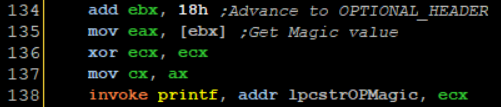
I add **0x18 **to EBX which would advance us to the RVA of OPTIONAL HEADER and I load the first field of it to EAX. Its only one WORD long again, so I perform the same trick I did before. One might ask why am I not just passing CX, That is because printf expects a %d which is a double word value.
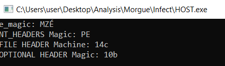
What is 10b?
You can learn a lot from the Microsoft offical documentation.
Then I execute lines 140-143

I advance EBX to the SizeOfImage field and save it. Please read on that value yourself. Notice that I first save the size of the virus file inside EDI, we’ll see how this is utilized later.
Now the file infection begins at line 146-156

I invoke GetModuleFileName again and save the current executing file name inside a global variable. Then at line 151 I invoke FindFirstFileA which should return a search handle to a file found by a specified search parameter
Only file names that start with the string HOST inside a specifc directory, if the search handle is returned it is saved inside hSearchHandle, the handle is printed and then we jump to lines 164-186

First I construct the new file named using sprintf. FindFirstFileA fills up a data structure we pass to it called WIN32_FIND_DATA which contains a filed called cFileName which contains the name of the file but not its full path. So I invoke sprintf to construct the full path to that file with its name. At line 170 I compare the viruses full name against the new found file, if they match the virus will execute the NEXT label which simply runs FindNextFileA, this function will look for the next file in the directory.
If the file names do not match, I invoke CreateFileA to open a handle to the found host file.
I execute lines 188-194

I use WriteFile to overwrite the host file with the virus buffer stored in the memory location returned by VirtualAlloc. Notice how I use EDI to pass the virus file size. I then close the file and jump to NEXT which will look for the next file. If another file is not found the virus will simply terminate.
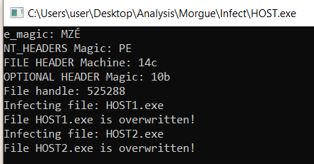
The file HOST1.exe and HOST2.exe are overwritten. If we load them into the debugger now they would execute the virus.
We reacted the Mini-44 virus inside a modern windows environment! How cool is that!
A cool thing about this virus that you can re-create it in C with relative ease, so as homework(which you don’t have to do) I recommend the reader re-creates this virus using C.
Conclusions
In this post, we learned the basics of Windows internals and DOS internals which laid up the basics for malware development under Windows environment. On the next post we’ll learn:
- How Parastic viruses worked and how they latch on to DOS EXE files
- We’ll execute the Hillary virus on Windows 95
- We’ll how to bypass ASLR and use the .reloc section in the PE file to our advantage.
- How to overwrite a specific section of a PE file instead of destroying it completely
- Use creative ways to minimize our infecting code size
See you guys next time!
Sources
http://static1.esetstatic.com/us/resources/white-papers/TDL3-Analysis.pdf
http://www.openrce.org/reference_library/files/reference/PE%20Format.pdf

 that’s really fun to hear
that’s really fun to hear{kind=link}
{kind=link}
{kind=link}
{kind=link}